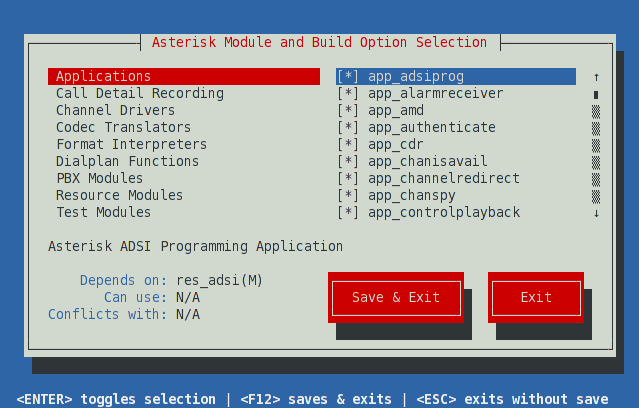

The next step in the build process is to tell Asterisk which modules[docs:1] to compile and install, as well as set various compiler options. These settings are all controlled via a menu-driven system called menuselect. To access the menuselect system, type:
[root@server asterisk-1.8.X.Y]# make menuselect
The menuselect menu should look like the screen-shot below. On the left-hand side, you have a list of categories, such as Applications, Channel Drivers, and PBX Modules. On the right-hand side, you'll see a list of modules that correspond with the select category. At the bottom of the screen you'll see two buttons. You can use the Tab key to cycle between the various sections, and press the Enter key to select or unselect a particular module. If you see [docs:] next to a module name, it signifies that the module has been selected. If you see *XXX next to a module name, it signifies that the select module cannot be built, as one of its dependencies is missing. In that case, you can look at the bottom of the screen for the line labeled Depends upon: for a description of the missing dependency.
When you're first learning your way around Asterisk on a test system, you'll probably want to stick with the default settings in menuselect. If you're building a production system, however, you may not wish to build all of the various modules, and instead only build the modules that your system is using.

We should also inform people that the sound prompts are selected in menuselect as well
When you are finished selecting the modules and options you'd like in menuselect, press F12 to save and exit, or highlight the Save and Exit button and press enter.
{kind=link}